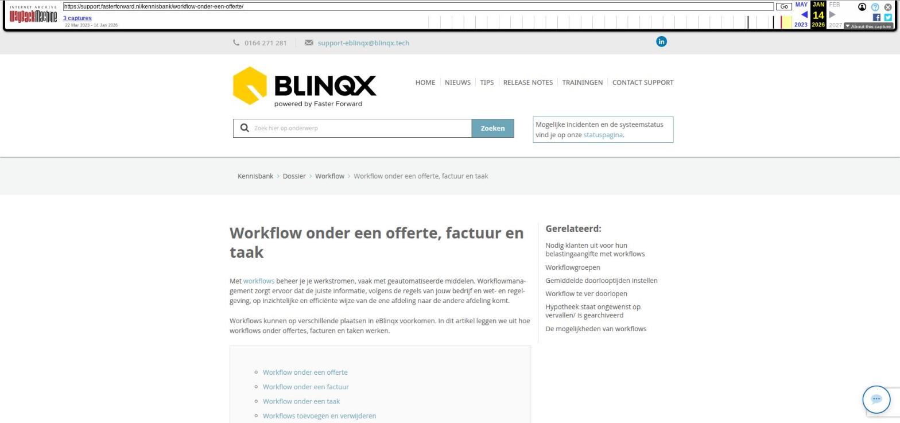

Workflow onder een offerte, factuur en taak

Tekstinhoud
Workflow onder een offerte, factuur en taak
Met workflows beheer je je werkstromen, vaak met geautomatiseerde middelen. Workflowmanagement zorgt ervoor dat de juiste informatie, volgens de regels van jouw bedrijf en wet- en regelgeving, op inzichtelijke en efficiënte wijze van de ene afdeling naar de andere afdeling komt.
Workflows kunnen op verschillende plaatsen in eBlinqx voorkomen. In dit artikel leggen we uit hoe workflows onder offertes, facturen en taken werken.
Workflow onder een offerte
Workflow onder een factuur
Workflow onder een taak
Workflows toevoegen en verwijderen
Workflows aanpassen of toevoegen
Workflow onder een offerte
Workflows kunnen gebruikt worden onder ieder type offerte. Workflows worden zo ingericht dat automatisch de juiste workflow wordt opgestart onder het goede product. De workflow wordt automatisch gestuurd door achtergrondprocessen, maar er zijn ook handmatige stappen in te zetten, bijvoorbeeld wanneer er een keuze moet worden gemaakt in de workflow. Je kunt een offerte met een workflow herkennen door het blauwe pijltje naast de status van het product. Wanneer je op het blauwe pijltje klik, kan je de stappen van de workflow zien.
Wanneer je in de workflow pop-up op "afbeelding" klikt, zie je de afbeelding van de workflow.
In offerte workflows worden een aantal acties vaak gebruikt. Dit zijn onder andere:
Registratie aanmaken
Document aanmaken
Status wijzigen van offerte
Taak aanmaken
Naast deze acties worden timers in een workflow gebruikt om bijvoorbeeld belangrijke data in de gaten te houden of om andere belangrijke stappen automatisch te signaleren.
Jouw omgeving beschikt standaard over basisworkflows. Deze workflows bestaan uit de meest gebruikte en logische stappen in het algemeen. Aanpassingen hierop zijn mogelijk. Deze kan je op aanvraag door medewerkers van Blinqx aan laten passen. Stuur hiervoor een e-mail naar support-eblinqx@blinqx.tech.
Workflow onder een factuur
Met workflows onder een factuur zijn bijvoorbeeld herinneringen en facturen versturen per e-mailen te automatiseren. Er kunnen ook stappen handmatig in de workflow gezet worden zoals het goedkeuren van een factuur of batch. Een workflow onder de factuur is te herkennen aan het paars pijltje. Deze staat in het klantdossier – tabblad Financieel zowel in het overzicht van de facturen als in de losse factuur zelf. Ook is de paarse pijl terug te vinden in het Facturenoverzicht. Wanneer je hierop klikt kan de volgende stap in de workflow genomen worden.
Workflow onder een taak
Onder elk type taak kan een workflow actief zijn. De workflow kan per type taak en categorie anders zijn, zodat er bijvoorbeeld voor afspraken een andere afhandeling is dan voor beltaken. In jouw takenoverzicht zijn taken met een workflow te herkennen aan het paarse pijltje voor de taak.
Voorbeelden van stappen in een taakworkflow is bijvoorbeeld bij een beltaak: "telefoongesprek gevoerd", " telefoon wordt niet opgenomen, later terugbellen" en "relatie niet kunnen bereiken (3 pogingen ondernomen)". De taak wordt daarna bijvoorbeeld afgerond of een dag opgeschoven.
Wanneer er een workflow actief is onder een taak dan kan deze taak alleen via de workflow worden afgerond. Zo kunnen gebruikers geen taak afronden zonder aan te geven dat ze dit doen. Dit wordt dan ook meteen geregistreerd.
Indien je de juiste rechten hebt, is het mogelijk om de workflow onder de taak te verwijderen. Dit kan je doen door op de naam van de taak te klikken en te gaan naar tabblad workflow. Middels het rode kruisje kan je de workflow verwijderen. Let op: als je de workflow verwijderd zullen bovengenoemde acties niet uitgevoerd worden.
Workflows toevoegen en verwijderen
Het kan gebeuren dat je de workflow te ver hebt doorgeklikt of dat deze geblokkeerd is en dat je deze wilt verwijderen. Indien je de juiste rechten hebt, is het mogelijk om workflows onder een offerte, taak of factuur toe te voegen of te verwijderen. Hiervoor ga je naar het tabblad Workflow. Voor het verwijderen van een workflow klik je op het rode kruisje. Voor het toevoegen van een workflow klik je op het groene plusje links bovenin. Let op: wanneer je een workflow opnieuw toevoegt, moet je alle stappen in deze workflow opnieuw doorlopen.
Workflows aanpassen of toevoegen
Het inrichten en aanmaken van workflows is erg complex. Indien je een workflow ingericht of aangepast wilt hebben, kunnen de medewerkers van Blinqx dit voor je doen. Stuur hiervoor een gedetailleerde aanvraag naar support-eblinqx@blinqx.tech.
Laatste update: 15 oktober 2025
Was deze informatie nuttig?
Ja Nee